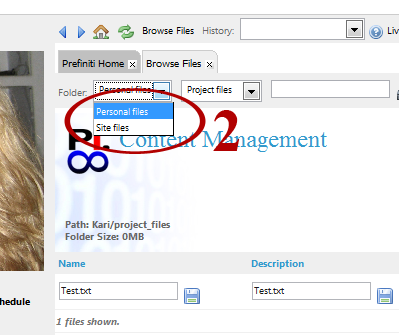
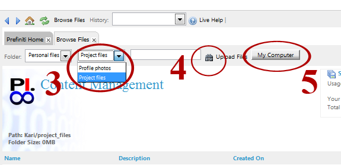
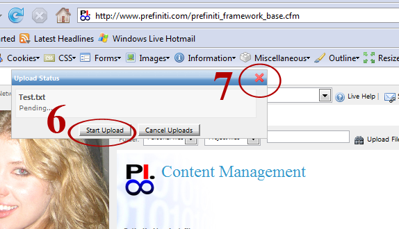

You can upload personal files to the 'Personal files' location. These files will count toward your personal storage space.Files that relate to your business can be uploaded to the 'Site files' location. These count toward your business account storage space, but not your personal storage space.
Click on 'My Files' as shown in picture (step 1). A new 'Browse Files' tab will open.
Select 'Personal files' from the drop down menu (step 2).

Select 'Project files' (step 3).
Note: If you want to upload photos that will appear in your personal profile, select 'Profile photos' and refer to instructions 'Upload profile photos.'
Select 'Upload files' (step 4). click the button 'My Computer' that appears (step 5).

Search for and select the file you would like to upload. Click 'Start Upload' (Step 6). Close the 'Upload Status' box by clicking on the 'X' (step 7).
